Everything you need to write about Vespertine.
Vespertine is a free, open-source music player for the Mac. It switches the DAC to each track's native sample rate and bit depth, shows BIT-PERFECT only when nothing has touched the samples, and says what changed whenever something did. It plays DSD up to DSD512, Dolby Atmos, TrueHD and DTS, including DTS CDs; renders surround as head-tracked Spatial Audio on AirPods; and flags “hi-res” files that were upsampled or made from lossy sources.
Fact sheet
| Name | Vespertine (formerly Nocturne) |
|---|---|
| Developer | Alexander Szeremeta, independent |
| Price | Free. Open source under the GPL-3.0; no account, subscription, ads or telemetry |
| Platform | macOS 26 Tahoe or later, Apple silicon and Intel |
| Current version | 0.6.3 · signed and notarized DMG, updates itself |
| Install | Download the DMG or brew install --cask szeremeta1/tap/vespertine |
| Links | Website · Source code · How to verify bit-perfect playback |
| Tested with | FiiO K11 (every rate to 384 kHz, DoP, integer mode), AirPods Max over USB-C and Bluetooth, MacBook Pro speakers |
| How it's made | Designed and directed by the developer; most of the code was written with AI coding agents (Claude Code and Codex), and he checks the audio paths on real hardware |
What's different
- An honest signal path. Each stage from file to DAC is shown with real numbers; BIT-PERFECT appears only when the conditions for it are met.
- Fake hi-res detection. Spectral analysis finds 16-bit audio padded to 24, upsampled CD masters, lossy-sourced files and synthetic “AI-enhanced” treble, and shows the evidence.
- Surround you own. SACD rips, DTS CDs, DTS-HD Master Audio, Dolby TrueHD and Dolby Atmos files play channel for channel, or as head-tracked Spatial Audio on AirPods.
- AirPods Max over USB-C are recognised as a lossless 24-bit / 48 kHz device.
- Free and open. Paid alternatives such as Audirvana Studio and Roon cost $79.99 and $149.88 a year.
Trailer
36 seconds, 16:9, 1080p at 60 fps, with sound. Download the MP4 (20 MB). A 4K master is available on request.
Logo
Always lowercase, the crescent always in brass. Please don't recolour, stretch or re-set it. Brand guide (PDF).


Key art
One image per feature, in three sizes: 2400×1350, 1600×900 and 1270×760.

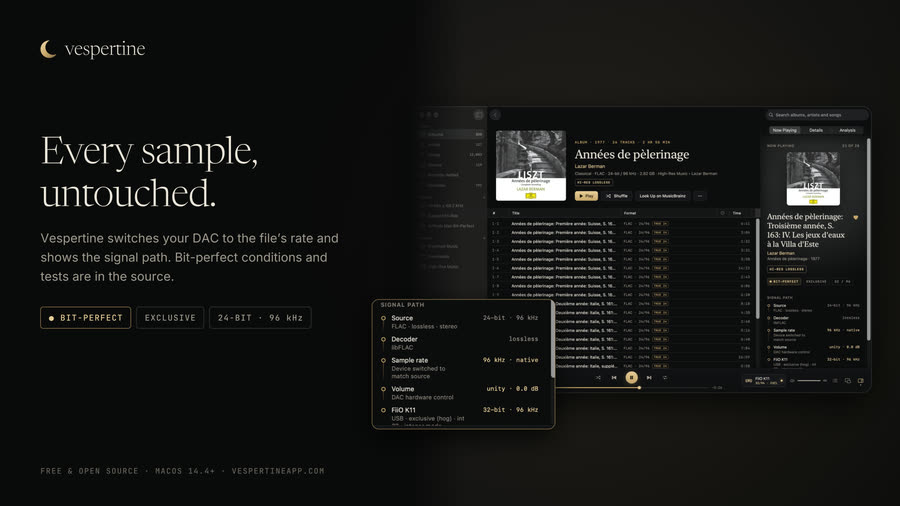


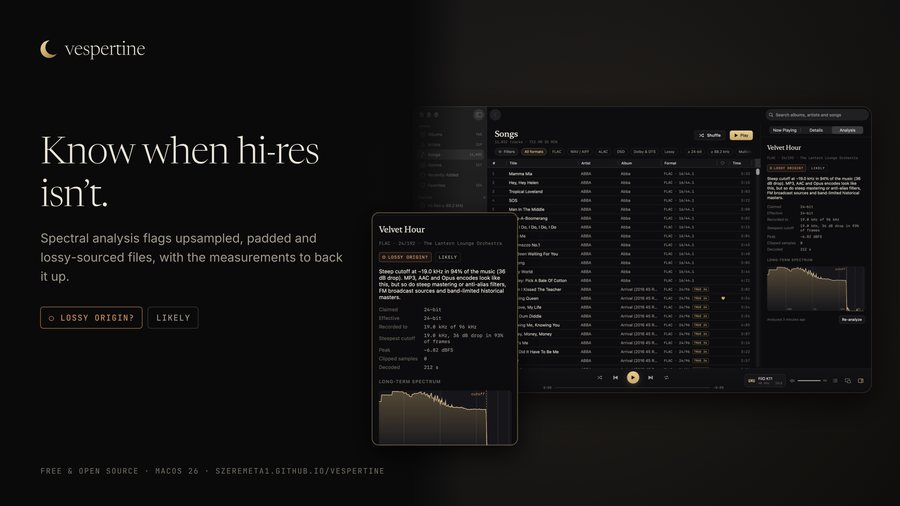


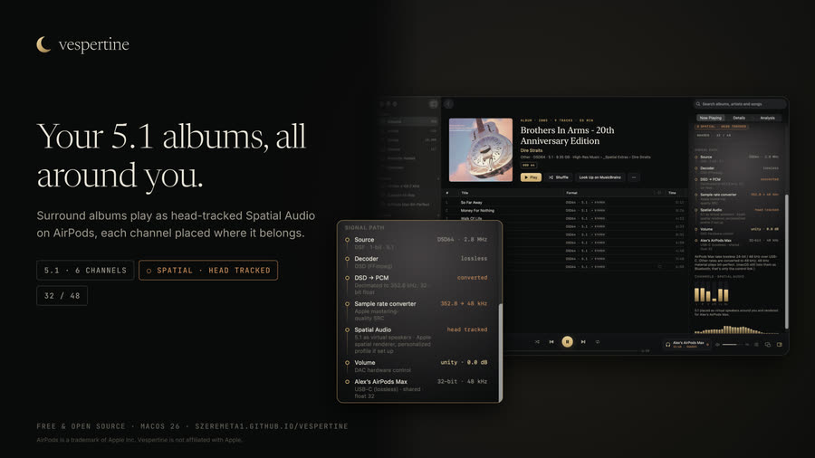


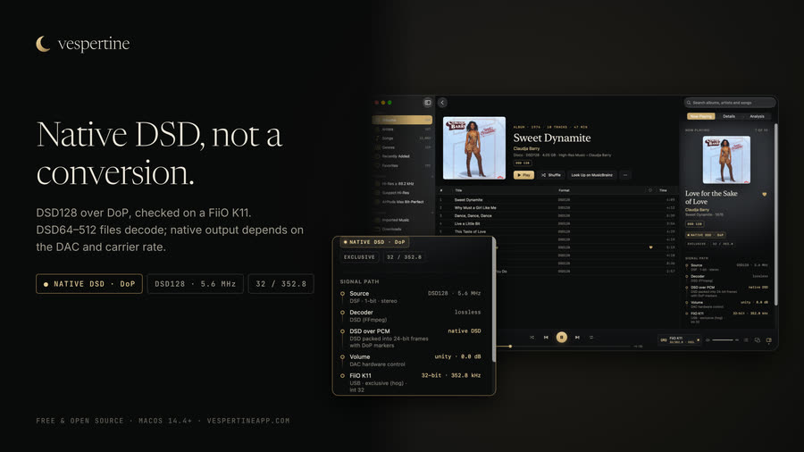


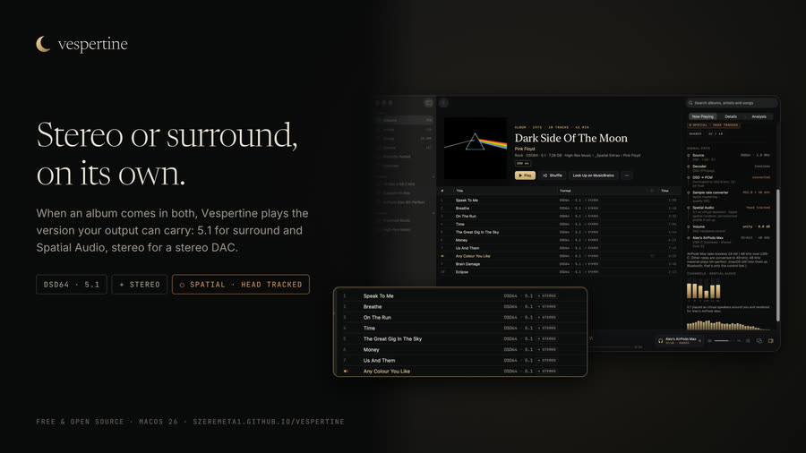


Screenshots
The real app on the developer's own library, 2400×1500. Album art belongs to its owners.

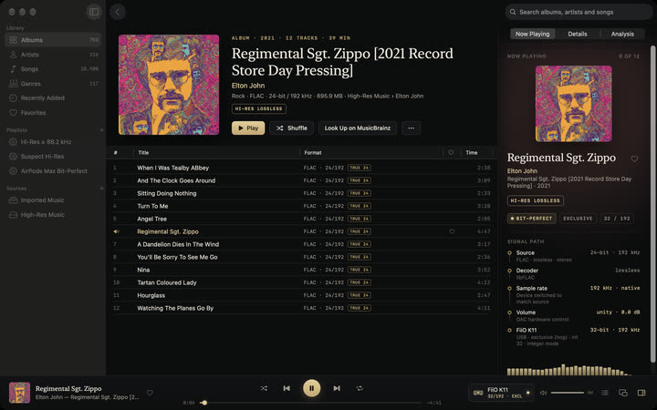

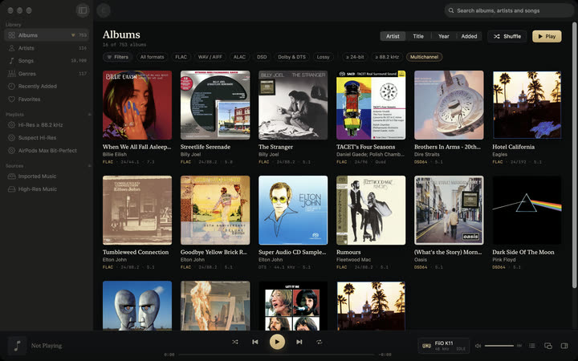

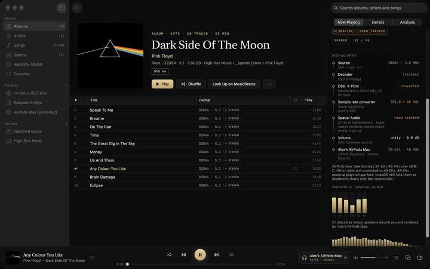

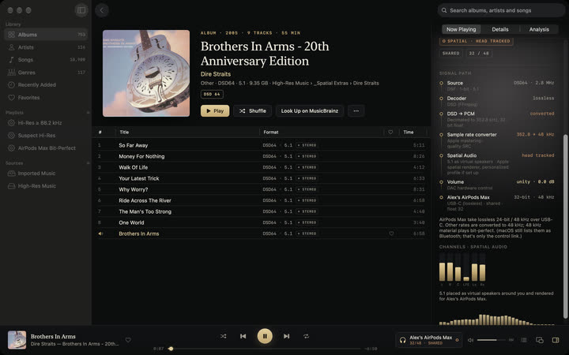

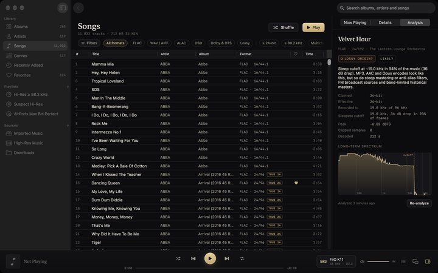

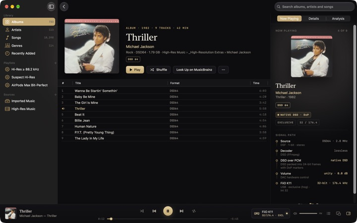

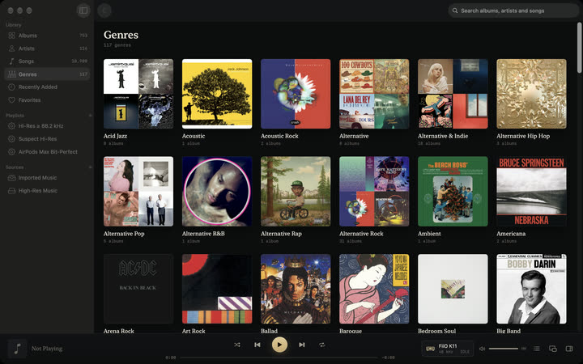

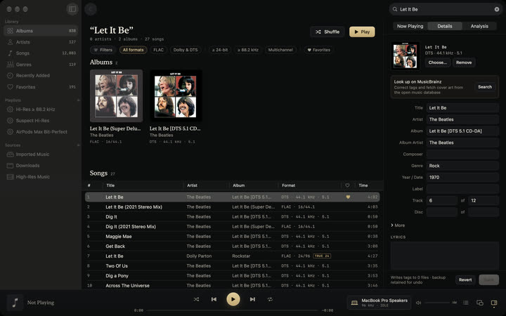

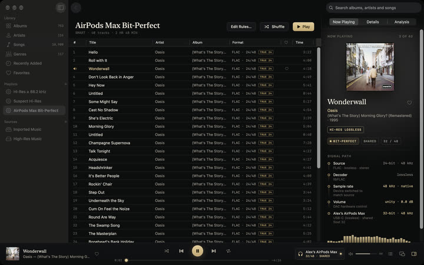
Contact
Press, questions and interview requests: press@szeremeta.org. Community questions: GitHub Discussions. Bugs and device reports: GitHub issues.